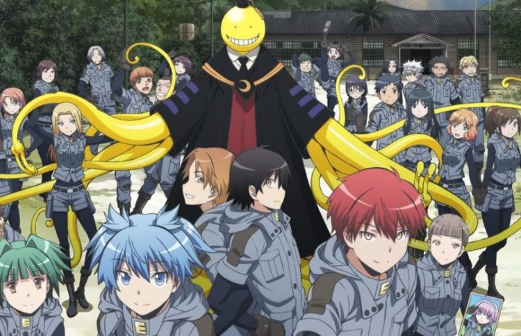

Assassination Classroom
Rating: 9.4/10
Review:
Assassination Classroom is about a class of misfits who are tasked with saving the world by killing their teacher. Their teacher, Korosensei, is a super organism capable of destroying an entire planet. He agrees to not obliterate the earth if he is allowed to teach this particular class of delinquent junior high students. They attempt to find ways to assassinate him but it is difficult because he can reach speeds up to mach 20. When watching this show you will experience every emotion one is capable of experiencing. The story has it’s extremely funny moments, as well as it’s extremely sad ones. The characters are amazing and draw you further into the story. Nagisa struggles with his own self-doubt and insecurities that make him very relatable to the audience. Karma, the exact opposite of Nagisa, is a troublemaker who was put into this class (3-E) for being violent. Watching him grow into the person he becomes makes him into a very likeable character and one of my favorite characters in anime. No matter your personality you will find a character you will relate too, similar to My Hero Academia.